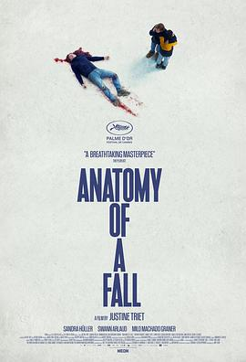

2023年10月
广播发布后不可编辑，所以每条都是那一刻的原话。
2023-10-31 23:21:03
想看 特工 / 공작
2023-10-31 22:58:13
 想看 卡比利亚之夜 / Le notti di Cabiria
想看 卡比利亚之夜 / Le notti di Cabiria
2023-10-29 16:05:03
看过 大陆酒店 / The Continental ★★★★☆
动作给力的，又玩了一遍基努的梗。（多线叙事结构很独特，我还蛮喜欢莱卡的。可惜只有他阵亡了。）
2023-10-26 22:19:08
写了《古立特宇宙 (2023)》的影评
当大石的《Union》响起的时候，我真一恍惚回到了五年前，那个十月的午后，阳光美好我看着电视又看看周围。排球的那个分镜我看过不止了五次，太经典了那个。古立特与戴拿和电光超人的梗真的融得超多，导致我的记忆也随着交叉了起来。五十岚的作画真的风格显著一眼了明，魔幻蒙太奇的场景感染力很强，…
（豆瓣在这里截断了，全文在这篇评论里）
2023-10-26 22:13:15
 看过 古立特宇宙 / グリッドマン ユニバース ★★★★★
看过 古立特宇宙 / グリッドマン ユニバース ★★★★★
当大石的《Union》响起的时候，我真一恍惚回到了五年前，那个十月的午后，阳光美好我看着电视又看看周围。排球的那个分镜我看过不止了五次，太经典了那个。古立特与戴拿和电光超人的梗真的融得超多，导致我的记忆也随着交叉了起来。五十岚的作画真的风格显著一眼了明，魔幻蒙太奇的场景感染力很强，填上了很多坑，补上了最重要的工具人响的戏份。六花说十六岁的时候就要世界末日了这种事真伤脑筋啊。新条出场的时候我是差点落下眼泪，风扬起了她的头发，后面的天粉红，我再一次心动。雨宫哲在观众与制作者之间的关系把控得相当好，相较于古立特来说，少去了很多作者风格，更适合大众的叙事。虚拟与现实，线条与摄影，监督不止一次地尝试了打破第四道墙，连接我们与他们。我依旧怀念那个用一卡就能交代人物与背景的雨宫，虽然如今也不错。
2023-10-21 21:33:36
 看过 河边的错误 ★★★★☆
看过 河边的错误 ★★★★☆
结局改得其实并不出彩。中间那段有限视角的梦境蒙太奇很出色，下河的那段长镜头比较连贯。总体还不错的。
2023-10-15 15:35:38
看过 燃烧 / 버닝 ★★★★★
个人对社会不公的反问与反击。
2023-10-14 22:43:34
看过 听到涛声 / 海がきこえる ★★★★★
小松和班长站在码头听见涛声看着云的灿烂与海面星星粼粼，伴着萨克斯的悠扬，我想生活就是这样的缺憾的。美术很棒背景出色，水彩的云朵很动人，摄影很不错，擅长用虚化技术，很少见的背景动了起来，给最后的相遇加了大分。音乐的旋律很合适，很美。我很喜欢这部电影了。
2023-10-14 21:13:26
想看 燃烧 / 버닝
2023-10-14 13:09:16

2023-10-10 23:23:15

2023-10-06 22:55:33
想读 族长的秋天
2023-10-03 20:36:53
 看过 无职转生Ⅱ 到了异世界就拿出真本事 Part.1 / 無職転生Ⅱ ～異世界行ったら本気だす～ ★★★★☆
看过 无职转生Ⅱ 到了异世界就拿出真本事 Part.1 / 無職転生Ⅱ ～異世界行ったら本気だす～ ★★★★☆
好好，依旧是歌唱着故事讲着。（相较于上季，这次太过于平淡了。）